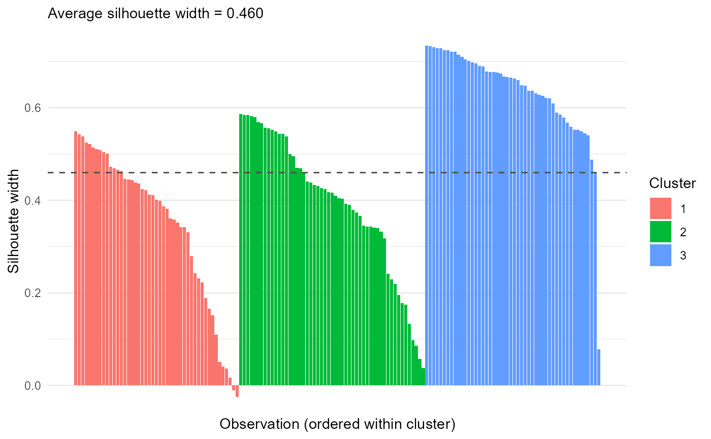

Standardizes selected numeric columns (optional) and runs stats::kmeans,
returning tidy cluster assignments, centers, and within-cluster sums of
squares.
Arguments
- data
A data frame.
- cols
<
tidy-select> Numeric columns to cluster on.- centers
Either the number of clusters (
k, a single integer) or a numeric matrix of initial cluster centers with the same number of columns ascols, passed tostats::kmeans. When a named matrix of centers is supplied, its row names are kept as cluster labels.- nstart
Number of random starts passed to
stats::kmeans; ignored whencentersis a matrix.- scale
Logical. If
TRUE(default), columns are standardized first.- iter.max
Maximum iterations passed to
stats::kmeans.
Value
An object of class mv_kmeans: a list with components cluster
(tibble with .row and cluster), centers (tibble with cluster and
one column per variable), within_ss (tibble with cluster, size,
withinss, share), data_mat (the standardized analysis matrix), and
meta.
Examples
r = mv_kmeans(iris, Sepal.Length:Petal.Width, centers = 3)
r$within_ss
#> # A tibble: 3 × 4
#> cluster size withinss share
#> <fct> <int> <dbl> <dbl>
#> 1 1 47 47.5 0.342
#> 2 2 53 44.1 0.317
#> 3 3 50 47.4 0.341
plot_mv_silhouette(r)
